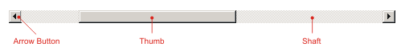

Scroll Bars
A window that displays text (like this one) can be thought of as a viewport
on a document. The scroll bar is the control on the side of the page that
moves this viewport up and down if the entire document doesn't fit inside the
viewport.

From a programmer's point of view, a scroll bar is a control that allows the
user to select a value from a range of discrete values. For example, in a text
editing program, the program has to figure out how many lines of text there are
in the document and how much text can fit within the viewport, and set the
range and thumb size of the scroll bars to reflect these values, so when the
user of the program changes the position of the scroll bar, the program will
scroll the text in a predictable manner.
The scroll bar position can be changed in a number of ways.
- Clicking one of the arrow buttons will change the position by one (which
usually translates to one line of text), and often performs the same
function as pressing one of the arrow cursor keys on the keyboard.
- Clicking on the shaft, but not on the thumb, will page the scroll bar,
which typically moves the viewport up or down one full screen. This is
the same as pressing Page Up or Page Down.
- Clicking on the thumb doesn't do anything, but clicking and dragging it
will cause the viewport to follow the thumb as you drag it. Sometimes
the window doesn't do the actual scrolling until you release the thumb,
which makes it difficult to see where the viewport will end up, but most
programs written nowadays will scroll the window as you drag.
- You can also right-click on the scroll bar and pull up a menu of
scrolling options. This is for the most part useless, but there are two
extra options in here that might be useful at times, Top and Bottom,
which will move the thumb to the top or bottom of the scroll range. This
can usually be done with the keyboard using the Ctrl-Home and Ctrl-End
key chords/combinations.
I like scroll bars a lot, if you hadn't noticed from the bajillion scroll bars
I have in the program. Most of these are part of other controls, like the
list boxes, the algorithm
control, and the LCD controls. They're used
for scrolling on the list boxes, but for the other controls they're used for
setting the value of the control.